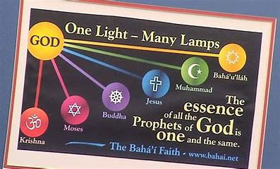
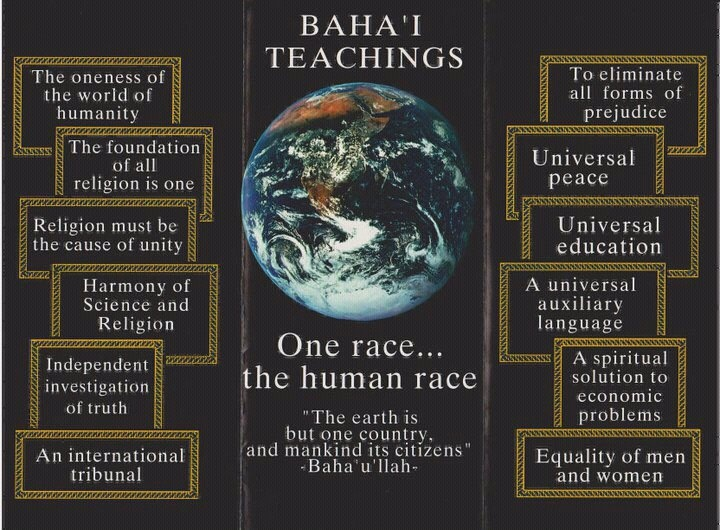

The Baha'i faith

Throughout history, God has sent to humanity a series of divine Educators—known as Manifestations of God—whose teachings
have provided the basis for the advancement of civilization. These Manifestations have included Abraham, Krishna,
Zoroaster, Moses, Buddha, Jesus, and Muḥammad. Bahá’u’lláh, the latest of these Messengers, explained that the religions
of the world come from the same Source and are in essence successive chapters of one religion from God.
Bahá’ís believe the crucial need facing humanity is to find a unifying vision of the future of society and of the nature
and purpose of life. Such a vision unfolds in the writings of Bahá’u’lláh.
What Baha'is believe

In thousands upon thousands of locations around the world, the teachings of the Bahá’í Faith inspire individuals
and
communities as they work to improve their own lives and contribute to the advancement of civilization. Bahá’í
beliefs
address such essential themes as the oneness of God and religion, the oneness of humanity and freedom from
prejudice,
the inherent nobility of the human being, the progressive revelation of religious truth, the development of
spiritual
qualities, the integration of worship and service, the fundamental equality of the sexes, the harmony between
religion
and science, the centrality of justice to all human endeavours, the importance of education, and the dynamics of the
relationships that are to bind together individuals, communities, and institutions as humanity advances towards its
collective maturity.
What Baha'is do
.jpeg)
Since the inception of the Bahá’í Faith in the Nineteenth Century, a growing number of people have found in the
teachings of Bahá’u’lláh a compelling vision of a better world. Many have drawn insights from these teachings—for
example, on the oneness of humanity, on the equality of women and men, on the elimination of prejudice, on the harmony
of science and religion—and have sought to apply Bahá’í principles to their lives and work. Others have gone further and
have decided to join the Bahá’í community and participate in its efforts to contribute directly to the realization of
Bahá’u’lláh’s stupendous vision for humanity’s coming of age.
Bahá’ís hail from all walks of life. Young and old, men and women alike, they live alongside others in every land and
belong to every nation. They share a common goal of serving humanity and refining their inner-lives in accordance with
the teachings of Bahá’u’lláh. The community to which they belong is one of learning and action, free from any sense of
superiority or claim to exclusive understanding of truth. It is a community that strives to cultivate hope for the
future of humanity, to foster purposeful effort, and to celebrate the endeavours of all those in the world who work to
promote unity and alleviate human suffering.